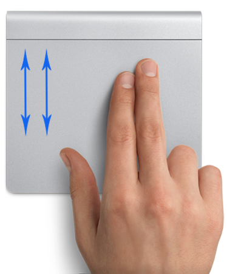
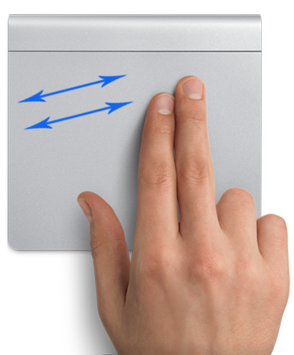

-webkit-overflow-scrolling:touch, как упоминалось в ответе, является возможным решением.
<div style="overflow:scroll !important; -webkit-overflow-scrolling:touch !important;">
<iframe src="YOUR_PAGE_URL" width="600" height="400"></iframe>
</div>
Но если вы не можете прокручивать вверх и вниз внутри iframe, как показано на рисунке ниже, 
вы можете попробовать прокручивать с двумя пальцами по диагонали, например,

Это действительно сработало в моем случае, поэтому просто поделитесь им, если вы еще не нашли решение для этого.
21
ответ дан Dipin Kumar 26 авг. '13 в 18:21
Не отображается, что iframes отображается и правильно прокручивается. Вы можете использовать тег объекта для замены iframe, и содержимое будет прокручиваться двумя пальцами. Вот простой пример:
<html>
<head>
<meta name="viewport" content="minimum-scale=1.0; maximum-scale=1.0; user-scalable=false; initial-scale=1.0;"/>
</head>
<body>
<div>HEADER - use 2 fingers to scroll contents:</div>
<div id="scrollee" style="height:75%;" >
<object id="object" height="90%" width="100%" type="text/html" data="http://en.wikipedia.org/"></object>
</div>
<div>FOOTER</div>
</body>
</html>
8
ответ дан deCastongrene 06 янв. '11 в 2:11
Это не мой ответ, но я просто скопировал его из https://gist.github.com/anonymous/2388015 только потому, что ответ является устрашающим и полностью устраняет проблему. Кредит полностью переходит к анонимному автору.
<script type="text/javascript" src="http://ajax.googleapis.com/ajax/libs/jquery/1.7.1/jquery.min.js"></script>
<script type="text/javascript">
$(function(){
if (/iPhone|iPod|iPad/.test(navigator.userAgent))
$('iframe').wrap(function(){
var $this = $(this);
return $('<div />').css({
width: $this.attr('width'),
height: $this.attr('height'),
overflow: 'auto',
'-webkit-overflow-scrolling': 'touch'
});
});
})
</script>
7
ответ дан Foreever 07 нояб. '14 в 13:33
Как упоминалось в других сообщениях, сочетание значений css переполнения: auto; а также -webkit-overflow-scrolling: touch;
работает, когда применяется к BOTH iframe, о котором идет речь, и его родительский div
С неудачным побочным эффектом двойных полос прокрутки в браузерах без касания.
Решением, которое я использовал, было добавить эти значения css через javascript/jquery. Это позволило мне использовать базовый CSS для всех браузеров.
if (isSafariBrowser()){
$('#parentDivID').css('overflow', 'auto');
$('#parentDivID').css('-webkit-overflow-scrolling', 'touch');
$('#iframeID').css('overflow', 'auto');
$('#iframeID').css('-webkit-overflow-scrolling', 'touch');
}
где isSafariBrowser() определяется как foll...
var is_chrome = navigator.userAgent.indexOf('Chrome') > -1;
var is_safari = navigator.userAgent.indexOf("Safari") > -1;
function isSafariBrowser(){
if (is_safari){
if (is_chrome) // Chrome seems to have both Chrome and Safari userAgents
return false;
else
return true;
}
return false;
}
Это позволило моему приложению работать на iPad Заметка 1) Не тестировалось на других ios-системах 2) Не тестировалось в браузерах Android на планшетах, возможно, потребуется внести дополнительные изменения.
(поэтому это решение может быть не полным)
5
ответ дан Toothless Seer 27 февр. '13 в 8:03
Код ниже работает для меня (спасибо Кристофер Циммерманн за его сообщение в блоге http://dev.magnolia-cms.com/blog/2012/05/strategies-for-the-iframe-on-the-ipad-problem/). Проблемы:
<!DOCTYPE HTML>
<html>
<head>
<title>Testing iFrames on iPad</title>
<style>
div {
border: solid 1px green;
height:100px;
}
.scroller{
border:solid 1px #66AA66;
height: 400px;
width: 400px;
overflow: auto;
text-align:center;
}
</style>
<table>
<tr>
<td><div class="scroller">
<iframe width="400" height="400" src="http://www.supremecourt.gov/opinions/11pdf/11-393c3a2.pdf" ></iframe>
</div>
</td>
<td><div class="scroller">
<iframe width="400" height="400" src="http://www.supremecourt.gov/opinions/11pdf/11-393c3a2.pdf" ></iframe>
</div>
</td>
</tr>
<tr>
<td><div class="scroller">
<iframe width="400" height="400" src="http://www.supremecourt.gov/opinions/11pdf/11-393c3a2.pdf" ></iframe>
</div>
</td>
<td><div class="scroller">
<iframe width="400" height="400" src="http://www.supremecourt.gov/opinions/11pdf/11-393c3a2.pdf" ></iframe>
</div>
</td>
</tr>
</table>
<div> Here are some additional contents.</div>
2
ответ дан WhatsInAName 01 авг. '12 в 20:45
Это то, что я сделал, чтобы прокрутить iframe для работы на iPad. Обратите внимание, что это решение работает только в том случае, если вы управляете html, отображаемым внутри iframe.
Фактически он отключает прокрутку iframe по умолчанию и вместо этого прокручивает тег body внутри iframe.
main.html
<!DOCTYPE html>
<html>
<head>
<style type="text/css">
#container {
position: absolute;
top: 50px;
left: 50px;
width: 400px;
height: 300px;
overflow: hidden;
}
#iframe {
width: 400px;
height: 300px;
}
</style>
</head>
<body>
<div id="container">
<iframe src="test.html" id="iframe" scrolling="no"></iframe>
</div>
</body>
</html>
test.html
<!DOCTYPE html>
<html>
<head>
<style type="text/css">
html {
overflow: auto;
-webkit-overflow-scrolling: touch;
}
body {
height: 100%;
overflow: auto;
-webkit-overflow-scrolling: touch;
margin: 0;
padding: 8px;
}
</style>
</head>
<body>
…
</body>
</html>
То же самое можно было бы сделать, используя jQuery, если вы предпочитаете:
$("#iframe").contents().find("body").css({
"height": "100%",
"overflow": "auto",
"-webkit-overflow-scrolling": "touch"
});
Я использовал это решение, чтобы заставить TinyMCE (редактор Wordpress) правильно прокручиваться на iPad.
2
ответ дан ccallendar 19 июня '12 в 22:20
Основываясь на в этой статье, я собрал следующий фрагмент, который предоставляет некоторые основные функции:
<div id = "container"></div>
<script>
function setPDFHeight(){
$("#pdfObject")[0].height = $("#pdfObject")[0].offsetHeight;
}
$('#container').append('<div align="center" style="width: 100%; height:100%; overflow: auto !important; -webkit-overflow-scrolling: touch !important;">\
<object id="pdfObject" width="100%" height="1000000000000" align="center" data="content/lessons/12/t.pdf" type="application/pdf" onload="setPDFHeight()">You have no plugin installed</object></div>');
</script>
Очевидно, что он далек от совершенства (учитывая, что он практически расширяет вашу высоту страницы до бесконечности), но это единственное жизнеспособное обходное решение, которое я нашел до сих пор.
0
ответ дан periklis 20 окт. '14 в 14:00
Ни одно из решений до сих пор не работало для меня, когда я пытался (иногда, только с ошибкой при вторичных нагрузках), но в качестве обходного пути, используя элемент объекта, как описано здесь, затем обертывание в прокручиваемое div, а затем установку объекта на очень высокую высоту (5000 пикселей) выполнил эту работу для меня. Это большой обходной путь и не работает невероятно хорошо (для стартеров страницы с более чем 5000 пикселей могут вызвать проблемы - 10000px полностью сломал его для меня), но, похоже, эта работа выполняется в некоторых моих тестовых случаях:
var style = 'left: ...px; top: ...px; ' +
'width: ...px; height: ...px; border: ...';
if (isIOs) {
style += '; overflow: scroll !important; -webkit-overflow-scrolling: touch !important;';
html = '<div style="' + style + '">' +
'<object type="text/html" data="http://example.com" ' +
'style="width: 100%; height: 5000px;"></object>' +
'</div>';
}
else {
style += '; overflow: auto;';
html = '<iframe src="http://example.com" ' +
'style="' + style + '"></iframe>';
}
В надежде, что Apple исправит проблемы Safari iFrame.
0
ответ дан Philipp Lenssen 23 окт. '14 в 19:56
Я поддерживаю большой, сложный, грязный старый сайт, в котором все (буквально) вложено в несколько уровней iframe - многие из которых динамически создаются и/или имеют динамический src. Это создает следующие проблемы:
Из решений, опубликованных до сих пор, этот является единственным, что я видел, который преодолевает проблему 1. К сожалению, похоже, что он не работает на некоторых фреймах, и когда это происходит, прокрутка очень глючная (что, по-видимому, вызывает другие ошибки на странице, такие как невосприимчивые ссылки и элементы управления формой).
Решение
Если приведенное выше звучит похоже на вашу ситуацию, вы можете попробовать следующую попытку script. Он отказывается от естественной прокрутки и вместо этого делает все iframes перетаскиваемыми в пределах их видового экрана. Вам нужно только добавить его в документ, содержащий фреймы верхнего уровня; он будет применять исправление по мере необходимости для них и их потомков.
Здесь работает fiddle *, и вот код:
(function() {
var mouse = false //Set mouse=true to enable mouse support
, iOS = /iPad|iPhone|iPod/.test(navigator.platform);
if(mouse || iOS) {
(function() {
var currentFrame
, startEvent, moveEvent, endEvent
, screenY, translateY, minY, maxY
, matrixPrefix, matrixSuffix
, matrixRegex = /(.*([\.\d-]+, ?){5,13})([\.\d-]+)(.*)/
, min = Math.min, max = Math.max
, topWin = window;
if(!iOS) {
startEvent = 'mousedown';
moveEvent = 'mousemove';
endEvent = 'mouseup';
}
else {
startEvent = 'touchstart';
moveEvent = 'touchmove';
endEvent = 'touchend';
}
setInterval(scrollFix, 500);
function scrollFix() {fixSubframes(topWin.frames);}
function fixSubframes(wins) {for(var i = wins.length; i; addListeners(wins[--i]));}
function addListeners(win) {
try {
var doc = win.document;
if(!doc.draggableframe) {
win.addEventListener('unload', resetFrame);
doc.draggableframe = true;
doc.addEventListener(startEvent, touchStart);
doc.addEventListener(moveEvent, touchMove);
doc.addEventListener(endEvent, touchEnd);
}
fixSubframes(win.frames);
}
catch(e) {}
}
function resetFrame(e) {
var doc = e.target
, win = doc.defaultView
, iframe = win.frameElement
, style = getComputedStyle(iframe).transform;
if(iframe===currentFrame) currentFrame = null;
win.removeEventListener('unload', resetFrame);
doc.removeEventListener(startEvent, touchStart);
doc.removeEventListener(moveEvent, touchMove);
doc.removeEventListener(endEvent, touchEnd);
if(style !== 'none') {
style = style.replace(matrixRegex, '$1|$3|$4').split('|');
iframe.style.transform = style[0] + 0 + style[2];
}
else iframe.style.transform = null;
iframe.style.WebkitClipPath = null;
iframe.style.clipPath = null;
delete doc.draggableiframe;
}
function touchStart(e) {
var iframe, style, offset, coords
, touch = e.touches ? e.touches[0] : e
, elem = touch.target
, tag = elem.tagName;
currentFrame = null;
if(tag==='TEXTAREA' || tag==='SELECT' || tag==='HTML') return;
for(;elem.parentElement; elem = elem.parentElement) {
if(elem.scrollHeight > elem.clientHeight) {
style = getComputedStyle(elem).overflowY;
if(style==='auto' || style==='scroll') return;
}
}
elem = elem.ownerDocument.body;
iframe = elem.ownerDocument.defaultView.frameElement;
coords = getComputedViewportY(elem.clientHeight < iframe.clientHeight ? elem : iframe);
if(coords.elemTop >= coords.top && coords.elemBottom <= coords.bottom) return;
style = getComputedStyle(iframe).transform;
if(style !== 'none') {
style = style.replace(matrixRegex, '$1|$3|$4').split('|');
matrixPrefix = style[0];
matrixSuffix = style[2];
offset = parseFloat(style[1]);
}
else {
matrixPrefix = 'matrix(1, 0, 0, 1, 0, ';
matrixSuffix = ')';
offset = 0;
}
translateY = offset;
minY = min(0, offset - (coords.elemBottom - coords.bottom));
maxY = max(0, offset + (coords.top - coords.elemTop));
screenY = touch.screenY;
currentFrame = iframe;
}
function touchMove(e) {
var touch, style;
if(currentFrame) {
touch = e.touches ? e.touches[0] : e;
style = min(maxY, max(minY, translateY + (touch.screenY - screenY)));
if(style===translateY) return;
e.preventDefault();
currentFrame.contentWindow.getSelection().removeAllRanges();
translateY = style;
currentFrame.style.transform = matrixPrefix + style + matrixSuffix;
style = 'inset(' + (-style) + 'px 0px ' + style + 'px 0px)';
currentFrame.style.WebkitClipPath = style;
currentFrame.style.clipPath = style;
screenY = touch.screenY;
}
}
function touchEnd() {currentFrame = null;}
function getComputedViewportY(elem) {
var style, offset
, doc = elem.ownerDocument
, bod = doc.body
, elemTop = elem.getBoundingClientRect().top + elem.clientTop
, elemBottom = elem.clientHeight
, viewportTop = elemTop
, viewportBottom = elemBottom + elemTop
, position = getComputedStyle(elem).position;
try {
while(true) {
if(elem === bod || position === 'fixed') {
if(doc.defaultView.frameElement) {
elem = doc.defaultView.frameElement;
position = getComputedStyle(elem).position;
offset = elem.getBoundingClientRect().top + elem.clientTop;
viewportTop += offset;
viewportBottom = min(viewportBottom + offset, elem.clientHeight + offset);
elemTop += offset;
doc = elem.ownerDocument;
bod = doc.body;
continue;
}
else break;
}
else {
if(position === 'absolute') {
elem = elem.offsetParent;
style = getComputedStyle(elem);
position = style.position;
if(position === 'static') continue;
}
else {
elem = elem.parentElement;
style = getComputedStyle(elem);
position = style.position;
}
if(style.overflowY !== 'visible') {
offset = elem.getBoundingClientRect().top + elem.clientTop;
viewportTop = max(viewportTop, offset);
viewportBottom = min(viewportBottom, elem.clientHeight + offset);
}
}
}
}
catch(e) {}
return {
top: max(viewportTop, 0)
,bottom: min(viewportBottom, doc.defaultView.innerHeight)
,elemTop: elemTop
,elemBottom: elemBottom + elemTop
};
}
})();
}
})();
* jsfiddle поддерживает поддержку мыши для тестирования. На рабочем месте вы хотите установить mouse = false.
0
ответ дан DoctorDestructo 04 февр. '16 в 5:55
После сильного обострения я обнаружил, как прокручивать в iframe на моем ipad. Секрет заключался в том, чтобы сделать вертикальный палец (один палец был прекрасен) на стороне LEFT области iframe (и, возможно, немного за пределами границы). На ноутбуке или ПК полоса прокрутки находится справа, так что, естественно, я потратил много времени на эксперимент с iPad с движением пальцев с правой стороны. Только когда я пробовал левую сторону, прокручивался iframe.
-1
ответ дан ccs 12 нояб. '11 в 23:46
Добавьте overflow: auto; к стилю, и прокрутка с двумя пальцами должна работать.
-1